РЕЗИНОВЫЙ СКРЕБОК ЗАДНЕГО СТЕКЛООЧИСТИТЕЛЯ > ЗАМЕНА |
| 1. СНИМИТЕ ЩЕТКУ ЗАДНЕГО СТЕКЛООЧИСТИТЕЛЯ |
| 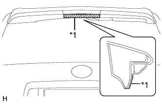 |
Наклейте защитную клейкую ленту в местах, показанных на рисунке.
| *1 | Защитная клейкая лента |
Установите замок зажигания в положение ON (ВКЛ).
Включите выключатель заднего стеклоочистителя.
Для моделей с кронштейном запасного колеса на двери багажного отделения:
| 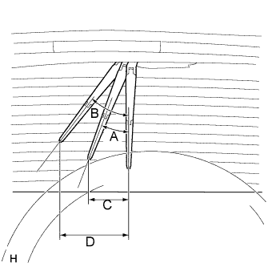 |
Выключите зажигание, когда рычаг стеклоочистителя остановится в положении, показанном на рисунке.
| Участок | Заданные условия |
| A - B | Примерно 27° - 39° |
| C - D | Примерно 200 - 273 мм (7,87 - 10,8 дюйма) |
Для моделей без кронштейна запасного колеса на двери багажного отделения:
| 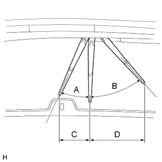 |
Выключите зажигание, когда рычаг стеклоочистителя остановится в положении, показанном на рисунке.
| Участок | Измерение |
| A - B | Примерно 23° - 43° |
| C - D | Примерно 170,4 - 304,9 мм (6,71 - 12,0 дюйма) |
| 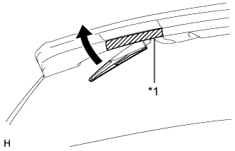 |
Поднимите рычаг заднего стеклоочистителя.
| *1 | Защитная клейкая лента |
| 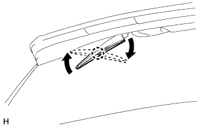 |
Поднимите щетку стеклоочистителя до расцепления захвата со щелчком, как показано на рисунке.
| 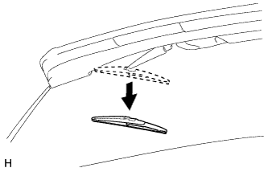 |
Потяните щетку стеклоочистителя в направлении левого бока автомобиля, чтобы снять ее с рычага.
| 2. СНИМИТЕ ЗАДНИЙ РЕЗИНОВЫЙ СКРЕБОК СТЕКЛООЧИСТИТЕЛЯ |
| 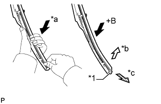 |
Приподнимите и вытяните конец резинового скребка стеклоочистителя, выступающий за стопор щетки, как показано на рисунке.
| *1 | Стопор (в задней части щетки) |
| *a | Слегка надавите (сожмите) |
| *b | Поднимите |
| *c | Потяните |
Снимите опорные пластины резинового скребка заднего стеклоочистителя.
| 3. УСТАНОВИТЕ РЕЗИНОВЫЙ СКРЕБОК ЩЕТКИ ЗАДНЕГО СТЕКЛООЧИСТИТЕЛЯ |
| 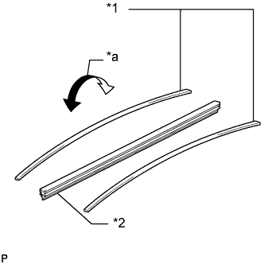 |
Установите опорные пластины резинового скребка заднего стеклоочистителя, как показано на рисунке.
| *1 | Опорная пластина резинового скребка щетки заднего стеклоочистителя |
| *2 | Резиновый скребок щетки заднего стеклоочистителя |
| *a | Искривление |
Выньте резиновый скребок из переднего конца щетки стеклоочистителя по направлению к заднему концу через второй захват.
| 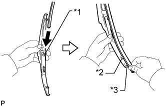 |
Протолкните резиновый скребок через задний конец захвата так, чтобы он выступал за задний стопор.
| *1 | Второй захват |
| *2 | Захват в задней части |
| *3 | Стопор в задней части |
| 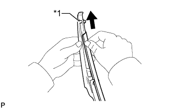 |
Сдвиньте резиновый скребок стеклоочистителя к переднему концу захвата.
| *1 | Захват в передней части |
| 4. УСТАНОВИТЕ ЩЕТКУ ЗАДНЕГО СТЕКЛООЧИСТИТЕЛЯ |
| 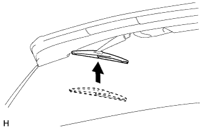 |
Протолкните щетку стеклоочистителя в направлении правого бока автомобиля, чтобы установить ее на рычаг стеклоочистителя.
Введите в зацепление захват и установите щетку заднего стеклоочистителя, как показано на рисунке.